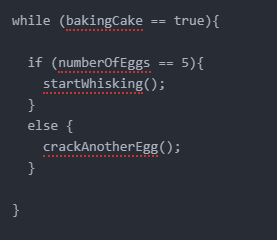

The analogy I would use to describe the difference between HTML and CSS is like the human body, the bones and muscle make up the structure, similar to how HTML is the structure of the webpage. On top of the structure we have a different aesthetic - humans have different hair colour, eyes, facial features etc. that make us different from each other. This is effectively what CSS does to a web page. Going further, Javascript could be described as the abilities that human body has, whether it can run, jump or swim in different ways and how you program the body to perform a function like that.
Control flow and loops are ways of repeating certain actions in the code until a task is completed. We use control flow statements like if to check whether the task has been completed, and then respond accordingly with actions. Below is an example of the control flow for adding eggs to a cake.
DOM stands for document object model. It is a programming API (Application Programming Interface) used for documents such as HTML documents (the ones that create the structure of our websites). The DOM is used as a middle man, allowing programmers to use javascript to change the elements of a website. Normally in javascript you would have trouble changing the background colour of a page, or an image in the heading, because you would have no reference to point to in the javascript. This is the problem the DOM solves, it allows all of the elements on the web page to be pointed to by a scripting language (javascript for example) and therefore will let the developer add much more functionality to the website.
Arrays are a list of data which is stored in indexes inside the array. An example of an array could be: [1, 2, 3, 4, 5] or ["Blue", "Green", "Red", "Yellow"]. To access data in an array we use the index which is just a number representing where in the array the data that we want is. If we want the first piece of data in an array we would say array[0] as in programming indexes start from 0 instead of 1. From there getting say the third element in an array would be done like this: array[2].
Objects also store data, but in slightly different ways. Instead of having an index to reference where the data is, objects have a key, which is just a string representing the data stored with it. An example of this might be: colour: "Blue" where 'colour' is the key and 'Blue' is the value stored at that key. To access this data we use the name of the object and then either square brackets ([]) or a dot (.), dot notation is used for members of an object where the key is just a string of normal characters, whereas square brackets are generally used when the object name is not just a string of normal characters e.g "Blue.colour" with the "." making this key inaccessable by dot notation because the compiler would think this is another method being called (Object.Blue.colour).
A function takes a series of programming actions that are going to need to be repeated in that sequence and condenses them into one instruction that will call the series of events every time that instruction is called. An example would be teaching somebody to jump. Instead of telling them over and over to crouch, swing their arms back and then spring upwards, you could condense these instructions into a jump function. This means that every time the 'person' or program gets the instruction 'jump' they would perform these actions one after the other.
This is useful because in a lot of programs there are actions you want to repeat over and over throughout the duration of the program running. When these are condensed into functions and then those functions are placed in loops it significantly reduces the number of lines of code the programmer has to write and also makes the program more compact and easier to understand.